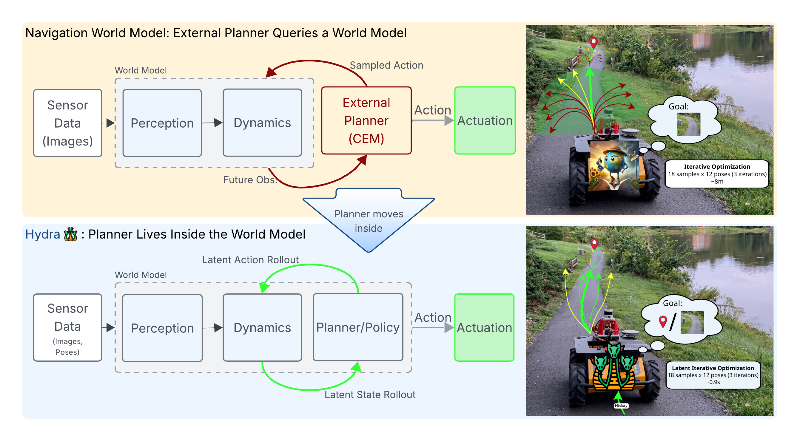
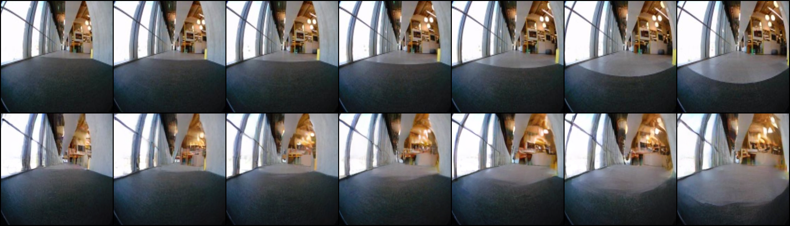
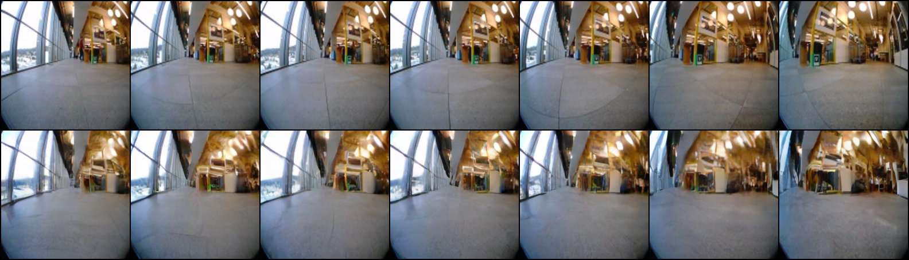
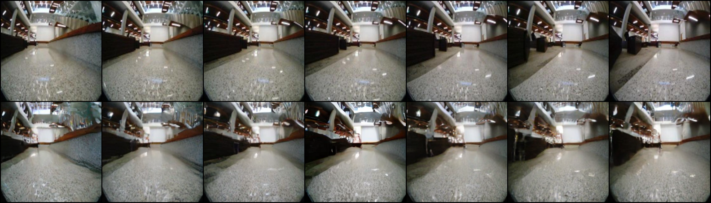
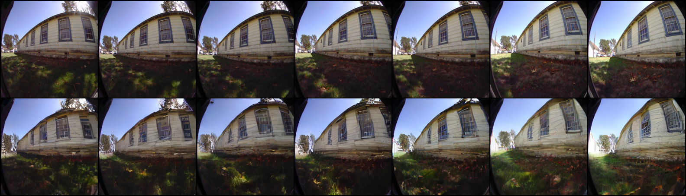
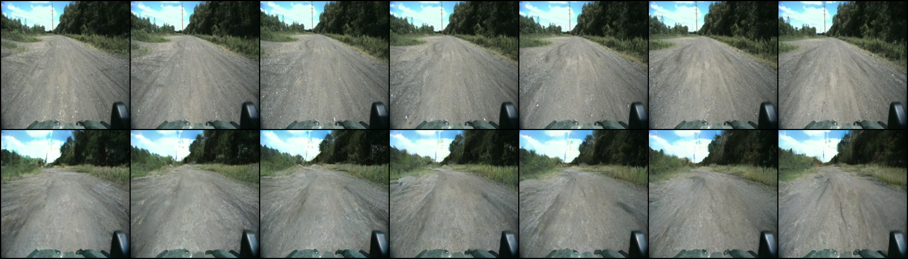

Visual robot navigation currently faces a severe representation dilemma. Leading foundation policies, like ViNT and NoMaD, are highly capable but fundamentally reactive. They lack an explicit internal model of world dynamics, making them myopic. Conversely, continuous world models, such as NWM, introduce predictive foresight but fall into a computational trap. Because of the representation misalignment, for instance, sampling and evaluating 18 trajectories takes over 500 seconds per step on a desktop GPU. It is physically undeployable on a robot.
To solve this, we introduce HYDRA, a World Action Model that bridges the gap between generative foresight and real-time physical execution via Discrete Latent Planning (DLP). By moving the planner inside the world model and evaluating trajectories in latent space, HYDRA balances visual understanding with kinodynamic intents. The result is a fast generative planning paradigm running in real-time on edge hardware.
Below is the planning performance on a Clearpath Jackal UGV evaluated in clear and occluded environments (Depth=3, Samples=18, Len=12).
| Model | Search Space | Plan Time ↓ | SR (Clear) ↑ | SR (Occluded) ↑ | Corner Turn ↑ |
|---|---|---|---|---|---|
| NWM | Continuous (CEM) | > 500.0s | 0/10 | 0/10 | 0/10 |
| VertiFormer | Continuous (MPPI) | 0.7s | 0/10 | 0/10 | 0/10 |
| HYDRA (Ours) | Discrete (DLP) | 0.9s | 10/10 | 8/10 | 8/10 |
HYDRA achieves the "Goldilocks" zone—real-time edge performance, overcoming NWM's catastrophic latency and VertiFormer's sample inefficiency.
HYDRA's generative head produces high-fidelity predictions of future states. We demonstrate this in two ways: teacher-forced generation, which shows the model's rendering quality given ground-truth actions, and action head generation, which shows the model's ability to create coherent long-term rollouts on its own. Notice how action head rollouts that lead to collisions (out-of-distribution states) result in visual "hallucinations," a powerful uncertainty signal we use for safe planning.
Model renders frames conditioned on ground-truth actions from the dataset, showing high-fidelity reconstruction.
Model predicts its own actions and generates future frames. The resulting "hallucination" upon collision is used as a cost for planning.
A curated set of videos produced by the image generation head.
We visualize the planning process by showing the robot's view alongside an RViz visualization of the plans being evaluated. This highlights how HYDRA selects a lowest cost path and executes it with a controller.
Robot view with RViz showing evaluated trajectories.
Execution of a planned trajectory (red) in a cluttered hallway. Yellow is uncond, purple is cond, and green is the planned path.
Sampling-based path following demonstration.
Real-world deployments across complex environments. HYDRA seamlessly handles dynamic obstacles and narrow corridors at scale.
No model is perfect. To foster transparent research, we highlight scenarios where HYDRA's performance degrades. Please see the paper's limitations section and failure analysis section in the Appendix.
Failure: Trapped in a tight space by not turning in time. The planner did not converge to the goal in time before a sharp right turn.
Failure: Vanishing Humans in Social Scenarios. The limited cardinality of the visual codebook causes degradation in social scenarios where there are lots of visual changes caused by humans who only occupy a small number of pixels.
1-step single image generation. The top row is the ground truth; the bottom is the generated image.





@misc{nazeri2026hydra,
title={Hydra: A Navigation World Action Model with Discrete Latent Planning and Continuous Flow-Matching Execution},
author={Nazeri, Mohammad and Card, Alex and Huber, Samira and Pokhrel, Anuj and Wang, Yujun and Hammele, Ruben and Song, Daeun and Pirk, Sören and Xiao, Xuesu},
year={2026}
}